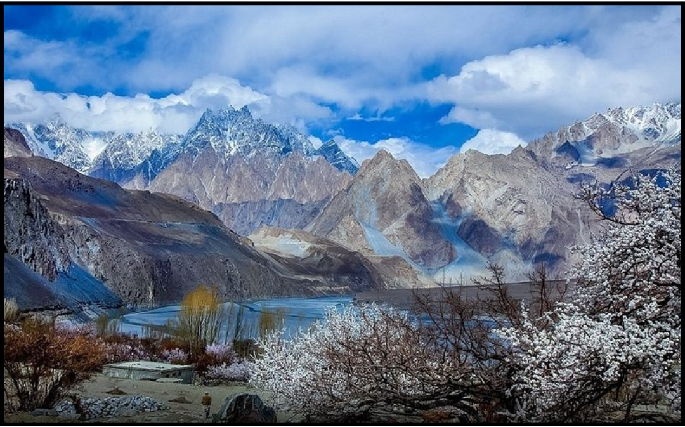

Discover Pakistan
Discover the beauty of Pakistan with our guide to the best tourist destinations.
 |
 |  |
Pakistan is a land of unparalleled natural beauty, rich history, and vibrant cultures. From the towering peaks of the Karakoram and Himalayan ranges to the serene beaches along the Arabian Sea, the country offers diverse landscapes. The northern regions, including Hunza, Skardu, and Swat, are known for their breathtaking valleys, crystal-clear lakes, and majestic glaciers, making them a paradise for trekkers and nature lovers.
The country's cultural diversity is reflected in its people, languages, and traditions. From the warm hospitality of the Pashtuns to the colorful festivals of the Kalash people, each region offers a unique experience. Whether exploring ancient ruins, marveling at intricate architecture, or enjoying traditional chai, Pakistan promises an unforgettable journey. Plan your visit today and discover the hidden gems of this beautiful land.